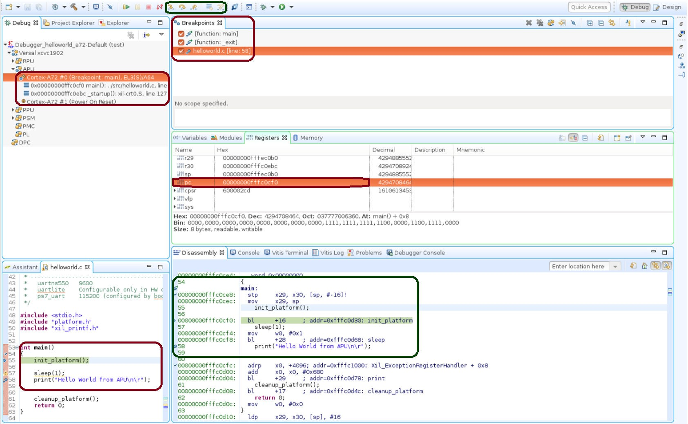

使用 Vitis 软件平台进行调试¶
本章描述了对您所执行的设计流程可能出现的各种问题进行调试的方法。第一个选项是使用赛灵思 Vitis™ 软件平台进行调试。
Vitis 软件平台调试器提供了下列调试功能：
支持在 Arm® Cortex™-A72、Arm Cortex-R5F 和 MicroBlaze™ 处理器架构（异构多处理器硬件系统调试）上调试程序。
支持在硬件开发板上调试程序。
支持在远程硬件系统上进行调试。
提供功能丰富的 IDE 用于调试程序。
提供工具命令语言 (Tcl) 界面，用于运行测试脚本和自动化操作。
Vitis 软件平台调试器支持您在程序执行时查看其中进行的操作。您可设置断点或观察点以停止处理器、单步调试程序执行、查看程序变量和堆栈以及查看系统中存储器的内容。
Vitis 软件平台支持通过赛灵思系统调试器进行调试。
赛灵思系统调试器¶
赛灵思 Vitis™ 软件平台调试器支持您对代码逐行进行单步调试。您可设置断点或观察点以停止处理器、单步调试程序执行、查看程序变量和堆栈以及查看系统中存储器的内容。
调试器支持通过单应用调试和 GNU 调试器 (GDB) 来进行调试。赛灵思自定义系统调试器衍生自开源工具并与 Vitis 软件平台集成。
赛灵思系统调试器使用赛灵思 hw_server 作为底层调试引擎。Vitis 软件平台可将每项用户界面操作转换为一连串目标通信框架 (TCF) 命令。随后，它会对系统调试器的输出进行处理，以显示所调试的程序的当前状态。它可使用赛灵思 hw_server 与硬件上的处理器进行通信。调试工作流程如下图所示。
图 1：系统调试器流程

调试工作流程由以下几个部分组成。
可执行 ELF 文件：要调试应用，您必须使用专为调试而编译的 elf 文件。调试用 elf 文件包含额外调试信息，以供调试器在源代码与该源代码所生成的二进制文件之间建立直接关联。要管理构建配置，请右键单击软件应用并选择“构建配置 (Build Configurations) → 管理 (Manage)”。
调试配置：要启动调试会话，您必须在 Vitis 软件平台中创建调试配置。此配置可捕获启动调试会话所需的选项，包括可执行文件名称、要调试的处理器目标及其它信息。要创建调试配置，请右键单击软件应用并选择“调试方式 (Debug As) → 调试配置 (Debug Configurations)”。
Vitis 软件平台调试透视图：通过使用“调试 (Debug)”透视图，您就可以在 Workbench 中管理程序的调试或运行。您可对程序的执行进行如下控制：包括设置断点、暂挂已启动的程序、单步调用代码并检验变量内容等。要查看“Debug”透视图，请依次选择“窗口 (Window) → 打开透视图 (Open Perspective) → 调试 (Debug)”。
在 Vitis 软件平台中，修改代码、构建可执行文件和调试程序的整个流程是可重复的。
注意：如果您在编译后对源代码进行编辑，则会更改行号，因为调试信息与源代码之间直接相连。同样，对已最优化的二进制文件进行调试还可能导致执行追踪过程中出现意外的跳步。
使用 Vitis 软件平台调试软件¶
此示例描述了如何调试 hello world 应用。
如果您尚未在 APU 或 RPU 上创建 hello world 应用，请遵循运行裸机 Hello World 应用或在 DDR 内存上运行裸机 Hello World 应用中的步骤创建此应用。
创建 Hello World 应用后，请逐步执行以下示例，使用 Vitis™ 软件平台来调试软件。
右键单击应用，然后单击“构建工程 (Build Project)”以构建应用。
右键单击应用工程并选择“调试方式 (Debug As) → 在硬件上启动（单应用调试）(Launch on Hardware (Single Application Debug))”，如下图所示。

注意：“Debug”透视图也可通过选择“窗口 (Window) → 调试透视图 (Debug Perspective)”来启动。

注意：此页面中所示地址可能与您的系统上所示地址略有不同。
处理器当前置于 main() 方法开头，且程序执行暂挂于行 0x00000000fffc0cf0。您可在“反汇编 (Disassembly)”视图中确认此信息，在此视图中显示汇编级程序执行同样暂挂于 0x00000000fffc0cf0。
注意：如果“Disassembly”视图未显示，请选择“窗口 (Window) → 反汇编 (Disassembly)”。
helloworld.c 窗口同样显示执行暂挂于 C 语言代码中的首个可执行文件行上。选择“寄存器 (Registers)”视图可确认程序计数器 pc 寄存器包含 0x00000000fffc0cf0。
注意：如果“Registers”视图未显示，请选择“窗口 (Window) → 寄存器 (Registers)”。
双击 helloworld.c 窗口中显示 printf(“Hello World from APU\n\r”); 的代码行边缘（行号左侧）处。这样即可在 printf 命令处设置断点。要确认断点，请复查“断点 (Breakpoints)”视图。
注意：如果“Breakpoints”视图未显示，请选择“窗口 (Window) → 断点 (Breakpoints)”。
选择“运行 (Run) → 单步进入 (Step Into)”以便对 init_platform() 例程执行单步进入。程序执行暂挂于 0x00000000fffc0cf0 位置。调用堆栈当前深度为 2 层。
选择“运行 (Run) → 恢复 (Resume)”以便继续运行程序直至断点。
这样程序执行会止于包含 printf 命令的代码行。“Disassembly”和“Debug”窗口均显示程序执行止于 0x00000000fffc0cf4。
注意：如果您对 helloworld 源代码执行了任何修改，那么您的调试窗口中的执行地址可能与此处所示不同。
请选择“Run → Resume”以便运行程序直至结束。
当程序完成后，“Debug”窗口显示程序暂挂于“exit”例程中。如果您在调试器控制下运行程序，就会出现此结果。
请反复多次运行您的代码。尝试单步步进、检验存储器、断点、修改代码并添加 print 语句。尝试添加和移动视图。
提示：您可使用 Vitis 软件平台调试快捷键来执行单步进入 (step-into) (F5)、单步返回 (step-return) (F7)、单步跳过 (step-over) (F6) 和恢复 (resume) (F8)。或者，您可使用工具栏按钮。
使用 XSCT 执行调试¶
您可在命令行模式下使用封装在 XSCT 内的 XSDB 来执行调试。此示例描述了如何使用 XSCT 来对裸机应用 hello_world_r5 执行调试。
以下步骤指示如何在 Arm Cortex-R5F 上使用 XSCT 加载裸机应用。
此示例仅用于演示使用 XSDB/XSCT 进行命令行调试时可能出现的情况。根据要求，您可在 XSCT 中选择使用系统调试器图形界面或使用命令行调试器来调试代码。所有 XSCT 命令均可脚本化，对于本示例中涵盖的命令都是如此。
设置目标¶
在目标上的 USB-JTAG 连接器与主机上的 USB 端口之间使用 USB 线进行连接。
在“JTAG 启动 (JTAG Boot)”模式下设置开发板，其中 SW1 设置如下图所示。

使用电源开关 SW13 给开发板上电。
单击 Vitis 软件平台工具栏中的“XSCT 控制台 (XSCT Console)”按钮，以打开“XSCT Console”视图。或者，也可依次单击“Xilinx → XSCT Console”以打开“XSCT Console”视图。

在“XSCT Console”视图中，使用 connect 命令通过 JTAG 连接至目标：
xsct% connectconnect 命令会返回连接的通道 ID。
加载 pdi/bin 文件：
device program <path to .pdi file>注意：在
C:\edt\edt_versal\edt_versal.runs\impl_1\edt_versal_wrapper.pdi中可找到此 PDI 文件。在 Windows 下，路径名应以括号（如，{C:\path\to\file.pdi}）括起，以避免反斜杠被视为转义字符。对于 Linux 则无此要求，因为 Linux 使用正斜杠。
使用 XSCT 加载应用¶
以下是使用 XSCT 加载应用的步骤。
运行
xsct% targets。targets 命令可列出可用目标，并允许您通过目标 ID 来选择相应目标。在 JTAG 链上发现目标时，会为其分配 ID，因此目标 ID 可能随会话不同而变。
注意：对于非交互式使用（例如，脚本编制），可使用 -filter 选项来选择目标，以代替按 ID 选择目标。
下图中列出了目标。

现在，请在 Arm® Cortex-R5F 核 0 上下载 hello_world_r5 应用。
选择 RPU Cortex™-R5F 核 0 目标 ID。
xsct% targets 3 xsct% rst -processor
rst -processor 命令用于清除个别处理器核上的复位。此步骤的重要性在于当 Versal™ ACAP 启动 JTAG 启动模式时，所有 Cortex- A72 核与 Cortex-R5F 核都保持处于复位状态。您必须清除每个核上的复位，然后才能在这些核上执行调试。XSDB 中的 rst 命令可用于清除复位。
注意：对于包含当前目标作为子项的组（例如，APU 或 RPU），运行 rst -cores 命令即可清除组中的所有处理器核上的复位。例如，如果当前目标为 Cortex-A72 #0，那么 rst -cores 可清除 APU 中的所有 Cortex-A72 核上的复位。
xsct% dow {C:\edt\edt_vck190\helloworld_r5\Debug\helloworld_r5.elf}或
xsct% dow C:/edt/edt_vck190/helloworld_r5/Debug/helloworld_r5.elf此时，您可看到来自 elf 文件的各段均按顺序下载。下载成功后会显示 XSCT 提示。现在，请配置串口终端（Tera Term、Minicom 或用于 UART-0 USB 串口连接的 Vitis 软件平台串口终端接口）。
串口终端配置¶
根据所用主机使用 Tera Term 或 Minicom 启动终端会话，COM 端口和波特率如下图所示。

对于端口设置，请验证器件管理器中的 COM 端口。VCK190 评估板提供了 3 个公开的 USB UART 接口。请选择与编号最低的接口关联的 COM 端口。在此例中，对于 UART-0，请选择含 interface-0 的 com-port。
使用 XSCT 运行和调试应用¶
运行应用前，请在
main()处设置断点。xsct% bpadd -addr &main此命令会返回断点 ID。您可使用 bplist 命令验证设置的断点。如需获取有关 XSCT 中的断点的详细信息，请在 XSCT 中输入
help breakpoint。恢复处理器核。
xsct% con当核命中断点时，会显示以下消息。
xsct% Info: Cortex-R5 \#0 Stopped at 0x10021C (Breakpoint)此时，当核停止后，您即可查看寄存器。
xsct% rrd查看局部变量。
xsct% locals单步跳过源代码中的一行，并查看堆栈追踪。
xsct% nxt Info: Cortex-R5 #0 Stopped at 0x100490 (Step) xsct% bt
您可使用
help命令来查找其它选项。 }
}您可使用
help running命令获取可用于利用 XSCT 运行或调试应用的选项列表。
现在，您可运行代码。
xsct% con这样即可在 UART-0 终端上查看 Cortex-R5F 应用打印消息。
© 2020 年赛灵思公司版权所有。